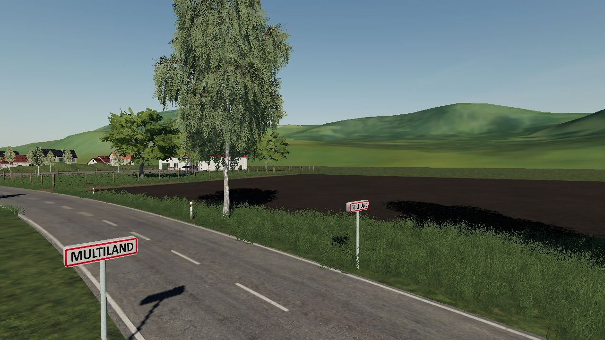
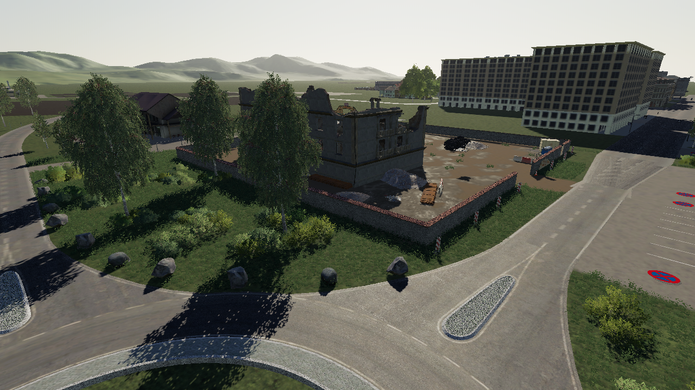
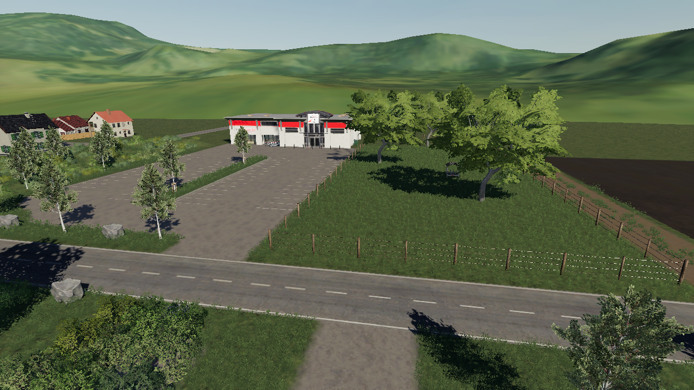
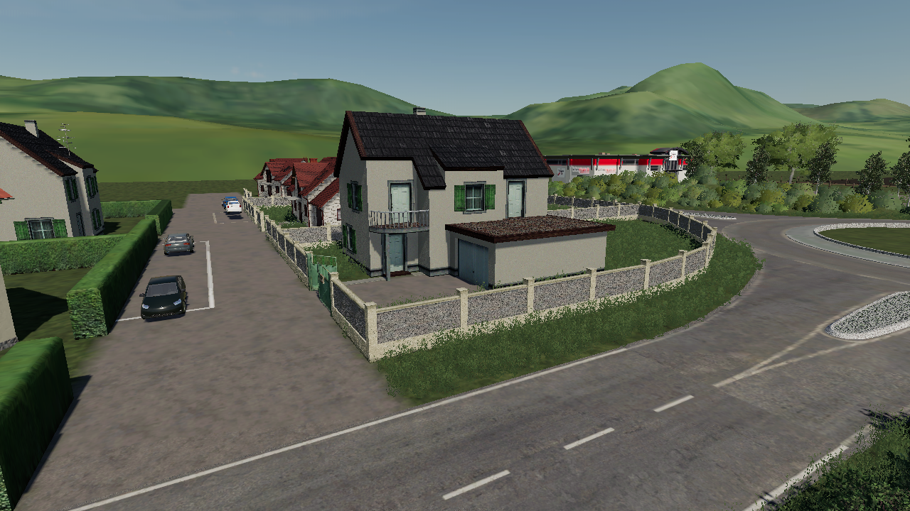

<div class="ribbon-timer" id="ribbon-timer">
    <span>Mise à jour dans :</span> <span id="timer-display">00 : 00 : 00 : 00</span>
</div>

<style>
    .ribbon-timer {
        position: fixed;
        top: 0;
        left: 0;
        width: 100%;
        background: linear-gradient(90deg, #ff9f43, #ff6b6b);
        color: #ffffff;
        
        /* Centrage flexible */
        display: flex;
        justify-content: center;
        align-items: center;
        flex-wrap: wrap; /* Permet au texte de passer à la ligne sur très petit écran */
        gap: 10px;      /* Espace entre le texte et le timer */
        
        padding: 8px 10px; /* Un peu plus de padding pour le confort */
        font-family: 'Segoe UI', Roboto, sans-serif;
        
        /* Taille de texte adaptative : ne descendra pas en dessous de 0.7rem */
        font-size: clamp(0.7rem, 2.5vw, 0.9rem);
        
        font-weight: 600;
        z-index: 9999;
        box-shadow: 0 2px 4px rgba(0,0,0,0.1);
        box-sizing: border-box; /* Important pour ne pas dépasser la largeur */
    }

    #timer-display {
        font-family: 'Courier New', Courier, monospace;
        background: rgba(255, 255, 255, 0.2);
        padding: 2px 8px;
        border-radius: 3px;
        white-space: nowrap; /* Empêche le timer de se couper en deux */
    }
</style>

<script>
(function() {
    const DURATION = 10 * 24 * 60 * 60 * 1000;
    const display = document.getElementById("timer-display");
    const pad = (num) => String(num).padStart(2, '0');

    let targetDate = localStorage.getItem('ribbonTimerEndDate');
    if (!targetDate) {
        targetDate = new Date().getTime() + DURATION;
        localStorage.setItem('ribbonTimerEndDate', targetDate);
    }

    const interval = setInterval(() => {
        const now = new Date().getTime();
        const distance = targetDate - now;

        if (distance < 0) {
            clearInterval(interval);
            display.innerHTML = "Terminé !";
            localStorage.removeItem('ribbonTimerEndDate');
            return;
        }

        const d = Math.floor(distance / (1000 * 60 * 60 * 24));
        const h = Math.floor((distance % (1000 * 60 * 60 * 24)) / (1000 * 60 * 60));
        const m = Math.floor((distance % (1000 * 60 * 60)) / (1000 * 60));
        const s = Math.floor((distance % (1000 * 60)) / 1000);

        display.innerHTML = `${pad(d)} : ${pad(h)} : ${pad(m)} : ${pad(s)}`;
    }, 1000);
})();
</script>

<div style="background-color: #ffc65d; border: 2px solid #ffc65d; border-radius: 15px; color: #444444; padding: 20px; text-align: center; font-family: sans-serif;">
  <h1 style="margin: 0;">Bienvenue sur AgriFarm</h1>
</div>

<div style="
    background-color: #1a1a1a; 
    padding: 15px 20px; 
    font-family: sans-serif; 
    width: 90%;           /* Remplace les 800px fixes par un pourcentage */
    max-width: 800px;     /* Le bloc ne dépassera jamais 800px, mais pourra rétrécir */
    margin: 20px auto; 
    border-radius: 8px; 
    display: flex; 
    justify-content: center; 
    box-sizing: border-box;
">
    
    <div style="display: flex; align-items: center; gap: 25px; flex-wrap: wrap; justify-content: center;">
        <a href="index.html" style="color: white; text-decoration: none; font-weight: bold; transition: 0.3s;" onmouseover="this.style.color='#ffc65d'" onmouseout="this.style.color='white'">ACCUEIL</a>
        <a href="map.html" style="color: white; text-decoration: none; font-weight: bold; transition: 0.3s;" onmouseover="this.style.color='#ffc65d'" onmouseout="this.style.color='white'">MAP</a>
        <a href="team.html" style="color: white; text-decoration: none; font-weight: bold; transition: 0.3s;" onmouseover="this.style.color='#ffc65d'" onmouseout="this.style.color='white'">EQUIPE</a>
        <a href="serveur.html" style="color: white; text-decoration: none; font-weight: bold; transition: 0.3s;" onmouseover="this.style.color='#ffc65d'" onmouseout="this.style.color='white'">SERVEURS</a>
        <a href="mods.html" style="color: white; text-decoration: none; font-weight: bold; transition: 0.3s;" onmouseover="this.style.color='#ffc65d'" onmouseout="this.style.color='white'">MODS</a>
        <a href="tuto.html" style="color: white; text-decoration: none; font-weight: bold; transition: 0.3s;" onmouseover="this.style.color='#ffc65d'" onmouseout="this.style.color='white'">TUTO</a>
	<a href="topmods.html" style="color: white; text-decoration: none; font-weight: bold; transition: 0.3s;" onmouseover="this.style.color='#ffc65d'" onmouseout="this.style.color='white'">TOPMODS</a>
        <a href="#contact" style="color: white; text-decoration: none; font-weight: bold; transition: 0.3s;" onmouseover="this.style.color='#ffc65d'" onmouseout="this.style.color='white'">CONTACT</a>
    </div>

</div>

<div style="position: relative; display: inline-block; width: 100%; font-family: 'Montserrat', sans-serif;">
    
    

    <div style="position: absolute; top: 50%; left: 50%; transform: translate(-50%, -50%); color: rgb(255, 176, 103); text-align: center; text-shadow: 3px 3px 10px rgba(0,0,0,0.8); width: 80%;">
        
        <div style="font-size: 5vw; font-weight: bold;">MultiLand !</div>
        <h2 style="margin: 0 0 20px 0;">Une carte unique sur Farming Simulator 19</h2>

        <div class="progress-container" style="width: 300px; margin: 10px auto;">
            <div style="display: flex; justify-content: space-between; margin-bottom: 8px;">
                <span style="font-family: sans-serif; font-weight: bold; color: white;">Progression Map</span>
                <span style="font-family: sans-serif; color: white;">51%</span>
            </div>
            
            <div style="background-color: rgba(224, 224, 224, 0.3); border-radius: 20px; height: 15px; width: 100%; overflow: hidden; backdrop-filter: blur(5px);">
                <div style="background: linear-gradient(90deg, #4caf50, #8bc34a); width: 51%; height: 100%; border-radius: 20px;"></div>
            </div>
        </div>

    </div>
</div>

<div style="background-color: #444444; border: 2px solid; #ffc65d;border-radius: 15px;color: #444444; padding: 30px; text-align: center; font-family: sans-serif;"></div>

<style>
    /* Animation pour les barres de progression */
    @keyframes remplissage {
        from { width: 0%; }
    }
    .progress-fill {
        animation: remplissage 1.5s ease-out forwards;
    }
</style>

<div style="display: flex; flex-direction: column; align-items: center; width: 100%; background-color: #444444; padding: 20px; box-sizing: border-box;">

    <h1 style="margin: 0 0 20px 0; text-align: center; color: white; font-family: sans-serif;">AVANCEMENT</h1>

    <div class="progress-container" style="width: 90%; max-width: 800px; margin: 10px auto;">
        <div style="display: flex; justify-content: space-between; margin-bottom: 8px;">
            <span style="font-family: sans-serif; font-weight: bold; color: white;">Modélisation 3D</span>
            <span style="font-family: sans-serif; color: white;">48%</span>
        </div>
       <div class="progress-bg" style="background-color: rgba(224, 224, 224, 0.3); border-radius: 20px; height: 15px; width: 100%; overflow: hidden; backdrop-filter: blur(5px);">
            <div class="progress-fill" style="background: linear-gradient(90deg, #4caf50, #8bc34a); width: 48%; height: 100%; border-radius: 20px; transition: width 1s ease-in-out; box-shadow: 0 2px 4px rgba(0,0,0,0.1);"></div>
        </div>
    </div>
    
</div>


<div style="display: flex; flex-direction: column; align-items: center; width: 100%; background-color: #444444; padding: 20px; box-sizing: border-box;">

    

    <div class="progress-container" style="width: 90%; max-width: 800px; margin: 10px auto;">
        <div style="display: flex; justify-content: space-between; margin-bottom: 8px;">
            <span style="font-family: sans-serif; font-weight: bold; color: white;">Environement</span>
            <span style="font-family: sans-serif; color: white;">36%</span>
        </div>
       <div class="progress-bg" style="background-color: rgba(224, 224, 224, 0.3); border-radius: 20px; height: 15px; width: 100%; overflow: hidden; backdrop-filter: blur(5px);">
            <div class="progress-fill" style="background: linear-gradient(90deg, #4caf50, #8bc34a); width: 36%; height: 100%; border-radius: 20px; transition: width 1s ease-in-out; box-shadow: 0 2px 4px rgba(0,0,0,0.1);"></div>
        </div>
    </div>
    
</div>


<div style="display: flex; flex-direction: column; align-items: center; width: 100%; background-color: #444444; padding: 20px; box-sizing: border-box;">

    

    <div class="progress-container" style="width: 90%; max-width: 800px; margin: 10px auto;">
        <div style="display: flex; justify-content: space-between; margin-bottom: 8px;">
            <span style="font-family: sans-serif; font-weight: bold; color: white;">Mise en jeu</span>
            <span style="font-family: sans-serif; color: white;">100%</span>
        </div>
       <div class="progress-bg" style="background-color: rgba(224, 224, 224, 0.3); border-radius: 20px; height: 15px; width: 100%; overflow: hidden; backdrop-filter: blur(5px);">
            <div class="progress-fill" style="background: linear-gradient(90deg, #4caf50, #8bc34a); width: 100%; height: 100%; border-radius: 20px; transition: width 1s ease-in-out; box-shadow: 0 2px 4px rgba(0,0,0,0.1);"></div>
        </div>
    </div>
    
</div>


<div style="display: flex; flex-direction: column; align-items: center; width: 100%; background-color: #444444; padding: 20px; box-sizing: border-box;">

    

    <div class="progress-container" style="width: 90%; max-width: 800px; margin: 10px auto;">
        <div style="display: flex; justify-content: space-between; margin-bottom: 8px;">
            <span style="font-family: sans-serif; font-weight: bold; color: white;">Tests internes : gameplay, production, ferme, culture, et correctif.</span>
            <span style="font-family: sans-serif; color: white;">0%</span>
        </div>
       <div class="progress-bg" style="background-color: rgba(224, 224, 224, 0.3); border-radius: 20px; height: 15px; width: 100%; overflow: hidden; backdrop-filter: blur(5px);">
            <div class="progress-fill" style="background: linear-gradient(90deg, #4caf50, #8bc34a); width: 0%; height: 100%; border-radius: 20px; transition: width 1s ease-in-out; box-shadow: 0 2px 4px rgba(0,0,0,0.1);"></div>
        </div>
    </div>
    
</div>


<div style="display: flex; flex-direction: column; align-items: center; width: 100%; background-color: #444444; padding: 20px; box-sizing: border-box;">


<h1 style="margin: 0; text-align: center; color: white; font-family: sans-serif;">PREMIERES IMAGES</h1>


<style>
        /* Le conteneur qui centre tout */
        .diaporama {
            width: 90%;            /* Devient flexible */
            max-width: 800px;      /* Ne dépasse pas 800px */
            aspect-ratio: 2 / 1;   /* Maintient le ratio 800/400 pour ne pas écraser les images */
            height: auto;          /* S'adapte à la largeur */
            margin: 20px auto;
            overflow: hidden;
            border-radius: 20px;
            box-shadow: 0 10px 20px rgba(0,0,0,0.5);
            position: relative;
        }

        /* Le conteneur qui défile - Largeur augmentée à 500% pour 5 images */
        .photos {
            display: flex;
            width: 500%; 
            height: 100%;
            animation: defilement 15s infinite; /* Temps augmenté pour 5 images */
        }

        /* Largeur de chaque image ajustée à 20% (1/5ème) */
        .photos img {
            width: 20%;
            height: 100%;
            object-fit: cover;
        }

        /* L'animation mise à jour pour 5 étapes */
        @keyframes defilement {
            0% { margin-left: 0; }
            17% { margin-left: 0; }
            20% { margin-left: -100%; }
            37% { margin-left: -100%; }
            40% { margin-left: -200%; }
            57% { margin-left: -200%; }
            60% { margin-left: -300%; }
            77% { margin-left: -300%; }
            80% { margin-left: -400%; }
            97% { margin-left: -400%; }
            100% { margin-left: 0; }
        }
    </style>

<body style="background-color: #444444;">

    <div class="diaporama">
        <div class="photos">
            
            
            
             
	     </div>
    </div>

</body>

<div style="display: flex; flex-direction: column; align-items: center; width: 100%; background-color: #444444; padding: 20px; box-sizing: border-box;">

<style>
        body { background-color: #444444; color: white; font-family: sans-serif; margin: 0; padding: 20px; }
        
        /* Style des cadres */
        .cadre { 
            background-color: #333; 
            border: 2px solid #ffc65d; 
            border-radius: 15px; 
            padding: 20px; 
            margin: 20px auto; 
            max-width: 800px;
        }

        .titre-main { 
            background-color: #ffc65d; 
            border-radius: 15px; 
            color: #444444; 
            padding: 10px; 
            text-align: center; 
            max-width: 800px;
            margin: 0 auto;
        }

        h1, h2 { margin: 0; }
        ul { line-height: 1.6; }
</style>

<div class="titre-main" style="background-color: #ffc65d; border-radius: 15px; color: #444444; padding: 10px; text-align: center; width: 90%; max-width: 800px; margin: 0 auto; box-sizing: border-box;">
        <h1>Informations de la map</h1>
    </div>

    <div class="cadre" style="background-color: #333; border: 2px solid #ffc65d; border-radius: 15px; padding: 20px; margin: 20px auto; width: 90%; max-width: 800px; box-sizing: border-box;">
        <h2 style="color: #ffc65d;">Caractéristiques de la Map</h2>
        <ul style="line-height: 1.6; padding-left: 20px;">
            <li>3 fermes : une laitière, une ovine et une à construire</li>
            <li>Un négociant en bétail et La coopérative du Soufflet</li>
            <li>L'export de céréales Fretodis</li>
            <li>La scierie animée avec grue BZH</li>
            <li>La laiterie avec ses productions inédites</li>
            <li>Le garagiste POUGEOT et Les anciens moulins Saint Frères</li>
            <li>La cocciMarket du village de Pallegney</li>
            <li>Le point de vente du bois de chauffage</li>
            <li>La coopérative des Vosges et La concessionnaire CLAAS</li>
            <li>L'entreprise Iso Paille et La menuiserie Bertrand</li>
            <li>L'entreprise Le Paysagiste</li>
            <li>Les ateliers municipaux et la caserne de pompiers</li>
            <li>Le château d'eau communal et Le BGA</li>
        </ul>
    </div>

    <div class="cadre" style="background-color: #333; border: 2px solid #ffc65d; border-radius: 15px; padding: 20px; margin: 20px auto; width: 90%; max-width: 800px; box-sizing: border-box;">
        <h2 style="color: #ffc65d;">Détails techniques</h2>
        <ul style="line-height: 1.6; padding-left: 20px;">
            <li>102 champs de dimensions variées</li>
            <li>15 pâtures dont 6 avec animaux et râteliers amovibles</li>
            <li>8 parcelles forestières et 122 parcelles achetables</li>
            <li>Un village totalement inédit "Pallegney"</li>
            <li>Une rivière "Le Dubion"</li>
            <li>Une voie ferrée avec un pont paysager</li>
        </ul>
    </div>


 <div style="background-color: #444444; border: 2px solid; #ffc65d;border-radius: 15px;color: #444444; padding: 30px; text-align: center; font-family: sans-serif;"></div>


   
<style>
    /* NE PAS MODIFIER CES STYLES POUR GARDER LA MISE EN FORME */
    body { background-color: #444444; color: white; font-family: sans-serif; margin: 0; padding: 20px; }
    
    /* BORDURES MISES EN BLEU (#00d4ff) */
    .cadre { 
        background-color: #333; 
        border: 2px solid #00d4ff; 
        border-radius: 15px; 
        padding: 20px; 
        margin: 20px auto; 
        max-width: 800px;
        width: 90%; /* Ajouté pour le rétrécissement automatique */
    }

    .titre-main { 
        background-color: #ffc65d; 
        border-radius: 15px; 
        color: #444444; 
        padding: 10px; 
        text-align: center; 
        max-width: 800px; 
        width: 90%; /* Ajouté pour le rétrécissement automatique */
        margin: 0 auto; 
    }

    h1 { margin: 0; font-size: 24px; }
    
    /* TITRES H2 MIS EN BLEU POUR ASSORTIR */
    h2 { margin-top: 0; color: #00d4ff; }
    
    ul { line-height: 1.6; }
</style>

<div class="titre-main">
    <h1>Avis</h1>
</div>

<div class="cadre">
    <h2>Avis n°1</h2>
    <ul>
        <li>Ajoute ton premier point ici</li>
        <li>Ajoute ton deuxième point ici</li>
        <li>Ajoute ton troisième point ici</li>
    </ul>
</div>

<div class="cadre">
    <h2>Modifie le titre de cette section</h2>
    <ul>
        <li>Détail technique 1</li>
        <li>Détail technique 2</li>
        <li>Détail technique 3</li>
    </ul>
</div>

<div style="background-color: #444444; border: 2px solid; #ffc65d;border-radius: 15px;color: #444444; padding: 30px; text-align: center; font-family: sans-serif;"></div>


<footer style="
    background-color: #2b2b2b; 
    color: #b0b0b0; 
    padding: clamp(20px, 5vw, 40px) 20px; 
    text-align: center; 
    border-top: 2px solid #00d4ff; 
    width: 100%; 
    margin-top: 50px;
    box-sizing: border-box; 
    font-family: 'Segoe UI', sans-serif;
    box-shadow: 0 -5px 15px rgba(0,0,0,0.3);
">
    <div style="max-width: 800px; margin: 0 auto; width: 100%;">
        <h3 style="color: #00d4ff; margin-bottom: 15px; letter-spacing: 2px; text-transform: uppercase;">AgriFarm</h3>
        <p style="font-size: clamp(0.8em, 2vw, 0.95em); line-height: 1.5; margin-bottom: 25px;">
            Plateforme communautaire dédiée aux passionnés de Farming Simulator et d'agriculture.<br>
            Rejoignez notre aventure sur nos serveurs officiels et partageons ensemble la passion pour le monde agricole.
        </p>
        
        <div style="display: flex; justify-content: center; gap: clamp(10px, 3vw, 20px); margin-bottom: 25px; flex-wrap: wrap;">
            <a href="mailto:contact.commufs@gmail.com" style="color: white; text-decoration: none; font-weight: bold; transition: 0.3s;">Contact</a>
            <span style="color: #444;">|</span>
            <a href="#" style="color: white; text-decoration: none; font-weight: bold; transition: 0.3s;">Mentions Légales</a>
            <span style="color: #444;">|</span>
            <a href="https://discord.gg/4hpynqxrtp" style="color: white; text-decoration: none; font-weight: bold; transition: 0.3s;">Discord</a>
        </div>
        
        <div style="border-top: 1px solid #444; padding-top: 20px; font-size: 0.8em;">
            &copy; 2026 AgriFarm - Tous droits réservés. <br>
            <span style="color: #555;">Site crée par MultiGame et Julien</span>
        </div>
    </div>
</footer>

    

